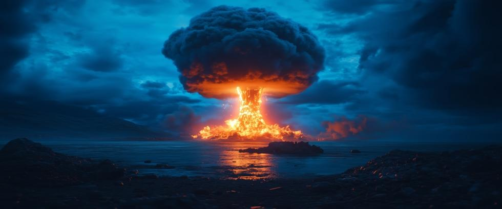

Nuclear power and nuclear weapons are often seen as separate topics—one about clean energy, the other about war and destruction. Yet from their earliest beginnings, the two have been joined at the hip by science, materials, and policy. To understand today’s nuclear risks, it is essential to examine how nuclear power and nuclear weapons are linked together.
The Shared Science
At the heart of both nuclear power and nuclear weapons lies a natural physical process called fission. Fission simply means to split apart. But when the nucleus of heavy atoms like uranium-235 (U235) or plutonium-239 (P239) splits apart, they release tremendous amounts of energy.
That energy is carefully controlled in civilian reactors to generate electricity. But fission is not restrained in nuclear weapons, allowing a runaway chain reaction to release tremendous amounts of energy in the blink of an eye.
The science is the same either way. What changes is how the science is applied—either for power generation or mass destruction.
Fueling the Connection
The natural connection between civilian and military use involves materials as well.
- Uranium Enrichment: Natural uranium is less than 1% U235 – the isotope needed for chain reactions. Nuclear power plants typically use uranium enriched to about 4% U235, but weapons-grade uranium is enriched to 90%. The proliferation issue arises because the same centrifuges that enrich uranium for reactor fuel can further enrich it to weapons-grade.
- Plutonium Production: Nuclear reactors that burn uranium produce plutonium as a byproduct. That plutonium, one separated from the fuel, can be used to build nuclear weapons. Several countries initiated their weapons programs by secretly diverting plutonium from reactors they promised were built for peaceful purposes instead.
This dual-use nature of nuclear materials makes it difficult to draw precise lines between power and weapons. Most countries able to enrich uranium or reprocess plutonium could also build a bomb in short order if they wanted to. Export controls have not stopped the spread of specialized equipment, and the required technical details, once well-guarded secrets, are now available for anyone to see on the internet.
History of a Dual Path
The connection between nuclear power and nuclear weapons is also historical.
- Atoms for Peace: In the 1950s, US President Dwight D. Eisenhower promoted the use of nuclear energy under this banner. But Eisenhower’s good intentions backfired when he created a proliferation nightmare instead. The technology he spread globally for power generation could also be used to build nuclear weapons – the greatest unforced nonproliferation error in history.
- The Manhattan Project: The Manhattan Project was a secret military program during World War II that invented and built the first atomic bombs. They also constructed the first nuclear reactors, but their reactors produced plutonium for bombs and no electricity.
- Proliferation as the Norm: Countries like India, a major benefactor of programs like Atoms for Peace, developed nuclear weapons using plutonium from reactors built with foreign assistance. This trend continued until there are now hundreds of nuclear reactors in the world today. Who knows how many are secretly diverting plutonium for weapons?
The Risk of Proliferation
Proliferation risks are natural. Nuclear power and nuclear weapons share the same basic science and much of the same technology.
- Hidden Programs: Countries have enriched uranium for nuclear power plants, while secretly diverting small quantities for weapons use. Iran’s nuclear program has long been suspect for this very reason, but others are guilty as well.
- Reactor Byproducts: Over 440 nuclear reactors operate worldwide, all of which generate plutonium.
- Knowledge Transfer: This was primarily a historical consideration, since a great deal of knowledge has already spread.
Once a nation with a nuclear reactor masters plutonium reprocessing and weapons design, it needs just one more thing to build a nuclear weapon: enough fissile material for a critical mass. But how much is enough? The US Government has officially stated that four kilograms of plutonium – a sphere the size of a softball – is sufficient to build a nuclear weapon.
This explains why the International Atomic Energy Agency (IAEA) was established to enforce safeguard agreements. But the figures available from 2023 show the IAEA performed over 2,000 inspections in 181 countries with fewer than 300 inspectors.
Facilities like nuclear power plants are massive and time-consuming complexes to inspect. And some nations take elaborate measures – especially when inspectors are absent – to conceal illegal activities.
Clean Energy Enters the Picture
Today, nuclear power advocates frame it as a climate solution. Unlike coal or natural gas, nuclear power does not emit greenhouse gases during operation. As the world considers climate change issues, nuclear energy has reemerged as a clean power alternative not dependent on intermittent energy from the sun or the wind.
Yet the debate often overlooks the elephant in the room: nuclear energy cannot be entirely separated from nuclear weapons. Every expansion of nuclear energy under our currently insufficient nonproliferation regime creates another path where fissile materials can be obtained for illegal weapons use.
For nations already armed with nuclear weapons, a civilian program helps maintain technical expertise and material flows. For nations without, it creates an opportunity to join the club.
Policy Choices
Historically, the link between nuclear power and nuclear weapons has involved policy as well:
- Most nations with civilian power reactors and the technical expertise to build nuclear weapons have chosen not to.
- Others built civilian research reactors they claimed were peaceful but produced illegal plutonium for weapons instead.
- Established nuclear powers like the US and Russia still rely on civilian programs to sustain the expertise and material pipelines supporting nuclear arsenals.
Those divergent paths illustrate how nuclear power and nuclear weapons are also linked by government policy. National leaders decide whether to separate plutonium or not, and what to do with the plutonium they separate.
Why It Matters
Our choices today will cast shadows for decades. Can we use nuclear power for clean energy without paving the way for more proliferation? Or must we decide that all nuclear power involves unacceptable proliferation risks, no matter how seemingly benign the program?
Answering those questions demands honesty about risks, but also about consequences and motivations.
A Product of Awareness
At Our Planet Project Foundation, we believe that beneficial change is a product of awareness. Science and technology gave us tools for creating nuclear power or nuclear weapons, but we decide which ones to create.
Whether the energy trapped inside atoms is used to light cities or to destroy them, nuclear power and nuclear weapons cannot be entirely separated. But on the other hand, if we can successfully eliminate nuclear weapons, we won’t have to.